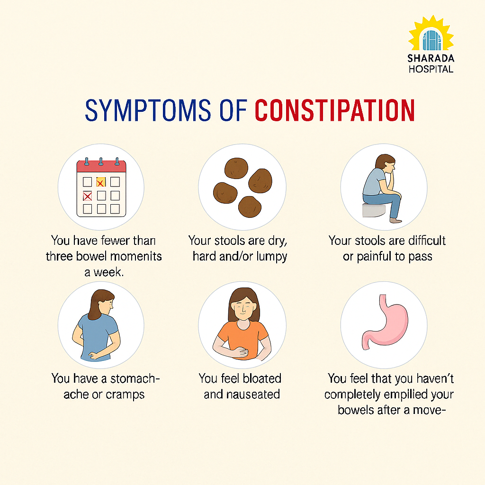

Understanding Constipation
Causes
- Low Fiber Diet – Lack of fruits, vegetables, grains.
- Dehydration – Not drinking enough water.
- Sedentary Lifestyle – Less movement slows digestion.
- Ignoring Urge – Holding stool regularly.
- Stress – Affects gut-brain connection.

Symptoms
- Infrequent Bowel Movements – Less than 3 per week.
- Hard Stools – Difficult to pass.
- Abdominal Pain – Cramping and discomfort.
- Bloating – Feeling full or gassy.
- Straining – During bowel movement.
Effects
- Hemorrhoids – Swollen blood vessels from straining.
- Anal Fissures – Small tears in the anus.
- Fecal Impaction – Hardened stool stuck in colon.
- Rectal Prolapse – Rectum bulges out from anus.
- Digestive Disorders – Long-term gut issues.
Prevention & Cure (Ayurveda)
- Herbal Support – Use Triphala, Isabgol, and Castor oil.
- Satvik Diet – High-fiber foods like papaya, flaxseed, and warm water.
- Lifestyle & Yoga – Regular walks and poses like Pavanmuktasana.
- Detox Therapies – Basti (medicated enema) is highly effective.
- Mind-Body Balance – Stress relief, routine, and hydration.